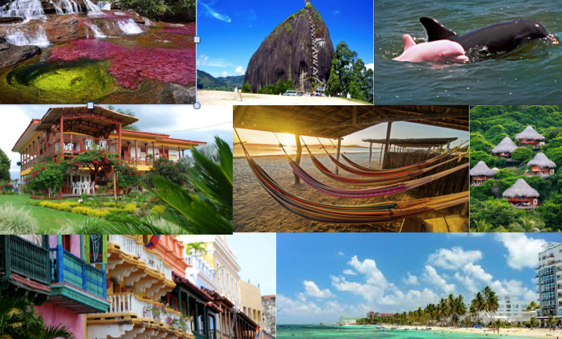

AGENCIA DE VIAJES COLOMBIA TRAVEL
!El destino es Colombia, la experiencia es tuya!
Tenemos los mejores pasadías, planes y excursiones para que salgas de la rutina y la monotonía. Anímate a viajar y gozar con nosotros
Tenemos los mejores pasadías, planes y excursiones para que salgas de la rutina y la monotonía. Anímate a viajar y gozar con nosotros
Opciones pensadas para que no solo viajes, sino que vivas experiencias inolvidables.

Salidas: Todos los domingos
El Parque del Café es un parque temático rodeado de paisajes cafeteros en el Quindío. Combina la cultura tradicional de la región con atracciones mecánicas y espacios de entretenimiento para la familia.
San Andrés es una paradisíaca isla del Caribe colombiano famosa por su "mar de los siete colores", donde sus aguas varían en deslumbrantes tonalidades entre azul turquesa, verde y azul marino.
Las Dunas de Taroa son un impresionante desierto de arena dorada en Punta Gallinas, La Guajira, que chocan directamente contra el azul del Mar Caribe. Este paisaje único del norte de Colombia permite caminar sobre la arena y terminar nadando en el mar.
Norcasia es un municipio del departamento de Caldas, Colombia, conocido por sus paisajes naturales, ríos y zonas de bosque. Es un destino ideal para disfrutar de actividades como senderismo, turismo de naturaleza, pesca y recorridos por el río La Miel.